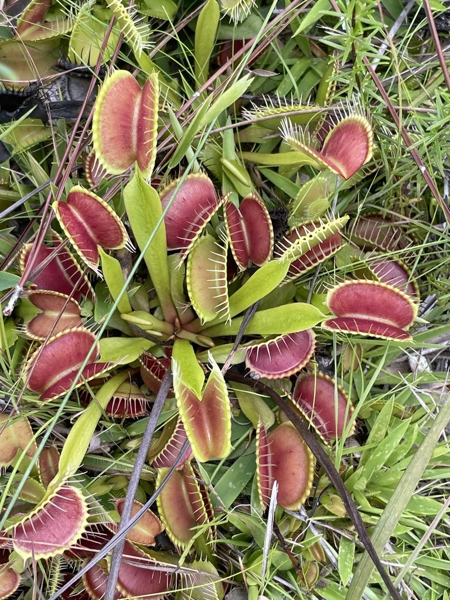

花卉与草本 · 植物界
捕蝇草 Dionaea muscipula

原产于北美沼泽的著名食虫植物，叶片特化成夹状捕虫器，能在瞬间合拢捕食昆虫。
- 分类
- 门被子植物门纲双子叶植物纲目石竹目科茅膏菜科属捕蝇草属
- 栖息环境
- 美国东南部沿海的酸性泥炭沼泽、湿地边缘，喜阳光充足与潮湿
- 地理分布
- 原产美国北卡罗来纳州与南卡罗来纳州沿海，世界各地有栽培
- 保护级别
- IUCN 易危（VU）；野生种群受贸易与栖息地丧失威胁
物种志
捕蝇草是一种小型多年生草本，叶柄扁平呈匙形，顶端特化为两片半圆形的捕虫夹。夹面内侧分布着感受毛，昆虫在短时间内触碰两根感受毛，夹子便会在不到一秒内闭合，边缘的齿状刺互相交错，把猎物困在其中；随后腺体分泌消化液，数天后吸收养分并重新张开。
它只原产于美国北卡罗来纳州和南卡罗来纳州沿海的湿润贫瘠沼泽，那里土壤缺氮，食虫成为补充营养的重要方式。捕蝇草喜充足阳光、酸性泥炭土和湿润环境，冬季需要低温休眠。由于栖息地排水、采集和非法贸易，野生种群受到威胁；人工繁殖个体较为常见，但购买时应选择正规繁殖来源，避免购买野外采挖植株。
形态与习性
- 捕虫方式感受毛触发，夹状叶在约 0.1–0.5 秒内闭合
- 叶片叶柄扁平，顶端为两片捕虫夹
- 光照全日照至半日照，光照不足时夹子颜色变淡
- 土壤酸性、贫瘠的泥炭土或水苔
- 水分保持湿润，使用低矿物质水
- 休眠冬季需低温休眠，减少浇水
趣味知识
- 捕蝇草需要连续触碰两根感受毛才闭合，可避免被雨滴等误触发。
- 每个捕虫夹通常只能开合数次，捕到大型猎物后可能腐烂发黑。
- 它原产地土壤极度贫瘠，食虫主要是为了补充氮和磷。